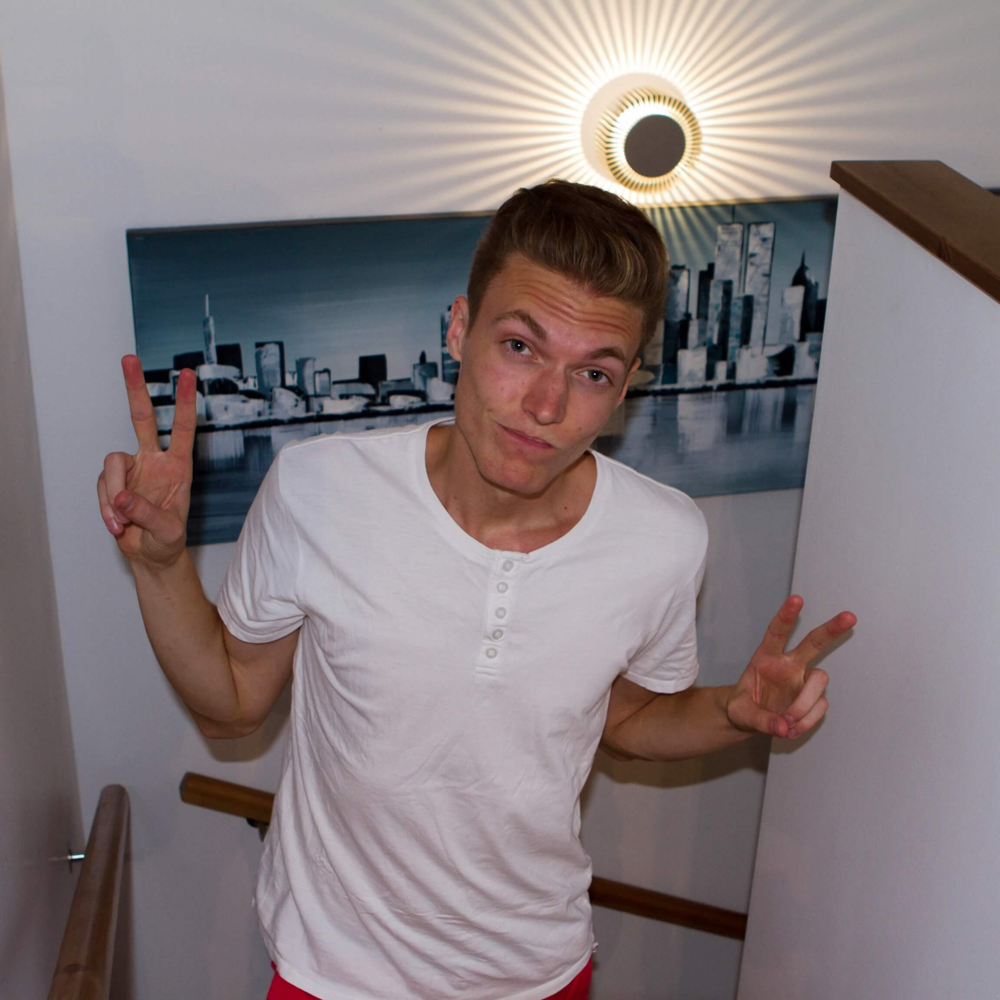

About

Dedicated and focused engineering student with a passion for programming, problem solving and challenges! My greatest strengths is the willingness to learn new things and my social side.
Previous work experience as a developer, IT-technicians, retail sellers and cashier. Previously functionary of the sections committee responsible for the contact and cooperation with companies.
Looking for a service where I can further develop my skills in programming and problem solving, as well as get the opportunity to learn new. In group I am a cheerful, initiative and cooperative guy, with great commitment and hungry for new challenges.
Personal interests
My professional and hobby interests exists within software, software design, game development, image & graphics, web design and web creation. My favorite hobbies is to create my own websites, developing games and editing movies.
Study

2014 - 2019
Master of Science in Computer Engineering, 300 credits
Faculty of Engineering LTH, Lund University
Expected graduation in June 2019
The education in Computer Engineering aims to meet the demand for engineers who are developing advanced computer technologies, systems and applications.
Programming languages
- Python
- Java
- C#
- Ruby
- Scala
- HTML
- CSS
- Javascript
Frameworks
- Node.js
- React
- Ruby on Rails
- AngularJS